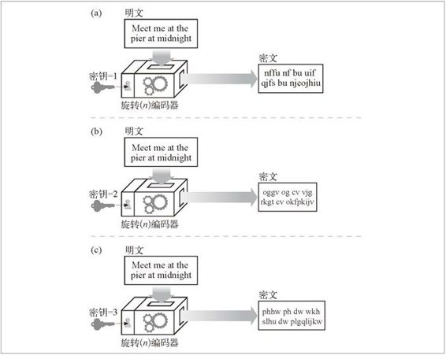

14.2 数字加密
在详细探讨 HTTPS 之前，我们先介绍一些 SSL 和 HTTPS 用到的加密编码技术的背景知识。在接下来的几节里，我们会对数字加密的本质进行一个快速的入门性介绍。如果你已经掌握了数字加密的技术和术语，可以直接阅读 14.7 节。
在这个数字加密技术的入门介绍中，我们会讨论以下内容。
密码
对文本进行编码，使偷窥者无法识别的算法。
密钥
改变密码行为的数字化参数。
对称密钥加密系统
编 / 解码使用相同密钥的算法。
不对称密钥加密系统
编 / 解码使用不同密钥的算法。
公开密钥加密系统
一种能够使数百万计算机便捷地发送机密报文的系统。
数字签名
用来验证报文未被伪造或篡改的校验和。
数字证书
由一个可信的组织验证和签发的识别信息。
14.2.1 密码编制的机制与技巧
密码学是对报文进行编 / 解码的机制与技巧。人们用加密的方式来发送秘密信息已经有数千年了。但密码学所能做的还不仅仅是加密报文以防止好事者的读取，我们还可以用它来防止对报文的篡改，甚至还可以用密码学来证明某条报文或某个事务确实出自你手，就像支票上的手写签名或信封上的压纹封蜡一样。
14.2.2 密码
密码学基于一种名为密码（cipher）的秘密代码。密码是一套编码方案——一种特殊的报文编码方式和一种稍后使用的相应解码方式的结合体。加密之前的原始报文通常被称为明文（plaintext 或 cleartext）。使用了密码之后的编码报文通常被称作密文（ciphertext）。图 14-3 显示了一个简单的例子。
图 14-3 明文和密文
用密码来生成保密信息已经有数千年了。传说尤利乌斯 · 凯撒（Julius Caesar）曾使用过一种三字符循环移位密码，报文中的每个字符都由字母表中三个位置之后的字符来取代。在现代的字母表中，“A”就应该由“D”来取代，“B”就应该由“E”来取代，以此类推。
比如，在图 14-4 中，用 rot3（旋转 3 字符）密码就可以将报文“meet me at the pier at midnight”编码为密文“phhw ph dw wkh slhu dw plgqljkw”。1 通过解码，在字母 表中旋转 -3 个字符，就可以将密文解密回原来的明文报文。
1 为了简化这个例子，我们没有对标点和空格进行旋转，但你可以自己试一试。
图 14-4 旋转 3 字符密码实例
14.2.3 密码机
最初，人们需要自己进行编码和解码，所以起初密码是相当简单的算法。因为密码很简单，所以人们通过纸笔和密码书就可以进行编解码了，但聪明人也可以相当容易地“破解”这些密码。
随着技术的进步，人们开始制造一些机器，这些机器可以用复杂得多的密码来快速、精确地对报文进行编解码。这些密码机不仅能做一些简单的旋转，它们还可以替换字符、改变字符顺序，将报文切片切块，使代码的破解更加困难。2
2 最著名的机械编码机可能就是第二次世界大战期间德国的 Enigma 编码机了。尽管 Enigma 密码非常复杂，但阿兰 · 图灵（Alan Turing）和他的同事们在 20 世纪 40 年代初期就可以用最早的数字计算机破解 Enigma 代码了。
14.2.4 使用了密钥的密码
编码算法和编码机都可能会落入敌人的手中，所以大部分机器上都有一些号盘，可以将其设置为大量不同的值以改变密码的工作方式。即使机器被盗，没有正确的号盘设置（密钥值），解码器也无法工作。3
3 在现实中，机器逻辑可能会指向一些可利用的模式，所以拥有机器逻辑有时会有助于密码的破解。现代的加密算法通常都设计为，即使大家都知道这些算法，恶意的攻击者也很难发现任何有助于破解代码的模式。实际上，很多功能最强大的密码都会将其源代码放在公共域中，供大家浏览和学习！
这些密码参数被称为密钥（key）。要在密码机中输入正确的密钥，解密过程才能正确进行。密码密钥会让一个密码机看起来好像是多个虚拟密码机一样，每个密码机都有不同的密钥值，因此其行为都会有所不同。
图 14-5 显示了使用密钥的密码实例。加密算法就是普通的“旋转 -N 字符”密码。N 的值由密钥控制。将同一条输入报文“meet me at the pier at midnight”通过同一台编码机进行传输，会随密钥值的不同产生不同的输出。现在，基本上所有的加密算法都会使用密钥。
14.2.5 数字密码
随着数字计算的出现，出现了以下两个主要的进展。
从机械设备的速度和功能限制中解放出来，使复杂的编 / 解码算法成为可能。
支持超大密钥成为可能，这样就可以从一个加密算法中产生出数万亿的虚拟加密算法，由不同的密钥值来区分不同的算法。密钥越长，编码组合就越多，通过随机猜测密钥来破解代码就越困难。

图 14-5 使用不同密钥的旋转 N 字符密码
与金属钥匙或机械设备中的号盘设置相比，数字密钥只是一些数字。这些数字密钥值是编 / 解码算法的输入。编码算法就是一些函数，这些函数会读取一块数据，并根据算法和密钥值对其进行编 / 解码。
给定一段明文报文 P、一个编码函数 E 和一个数字编码密钥 e，就可以生成一段经过编码的密文 C（参见图 14-6）。通过解码函数 D 和解码密钥 d，可以将密文 C 解码为原始的明文 P。当然，编 / 解码函数都是互为反函数的，对 P 的编码进行解码就会回到原始报文 P 上去。
图 14-6 用编码密钥 e 对明文进行编码，用解码密钥 d 进行解码